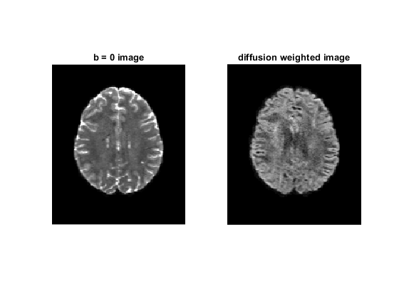
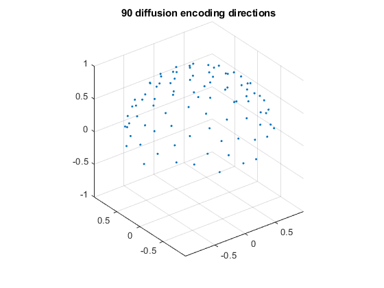
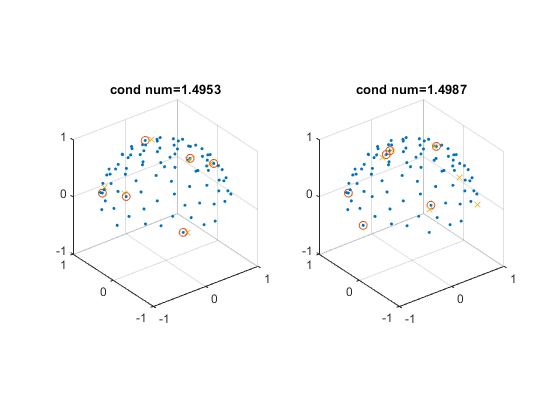
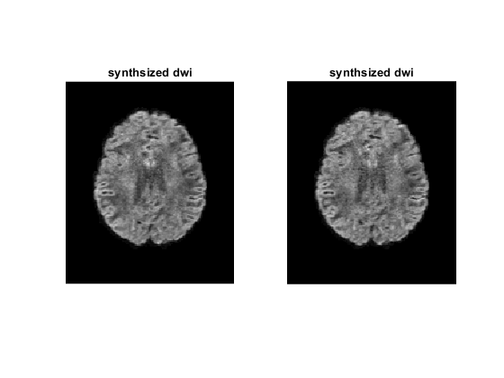
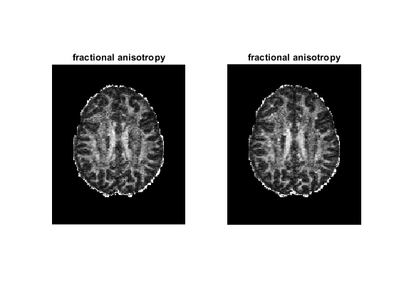
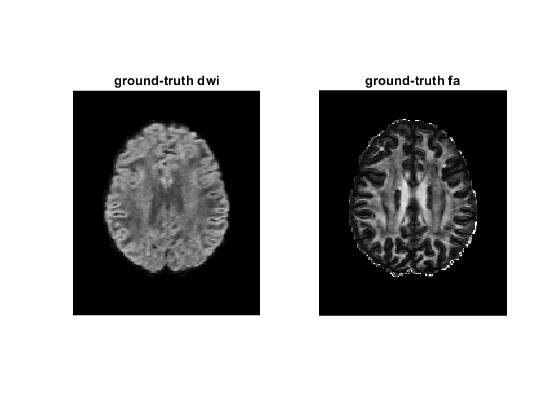
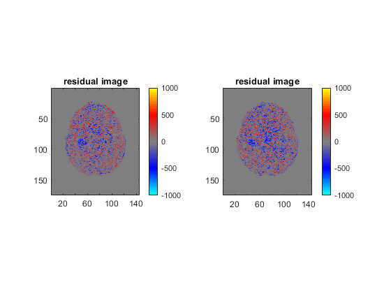

Contents
introduction
load data
clear, clc, close all
tmp = load('data.mat');
data = double(tmp.data);
bvals = tmp.bvals;
bvecs = tmp.bvecs;
mask = tmp.mask;
b0s = data(:, :, :, bvals < 100);
meanb0 = mean(b0s, 4);
dwis = data(:, :, :, bvals > 100);
bvals_dwi = bvals(bvals > 100);
bvecs_dwi = bvecs(bvals > 100, :);
dirs = bvecs(bvals > 100, :);
dirs_vis = dirs .* sign(dirs(:, 3));
sz_data = size(data);
figure;
subplot(1, 2, 1)
imshow(rot90(data(:, :, 35, 1)), [0, 10000])
title('b = 0 image');
subplot(1, 2, 2)
imshow(rot90(data(:, :, 35, 2)), [0, 4000])
title('diffusion weighted image');
figure;
plot3(dirs_vis(:, 1), dirs_vis(:, 2), dirs_vis(:, 3), '.');
grid on, axis equal
zlim([-1, 1])
title('90 diffusion encoding directions');
 
select optimized encoding directions
dsm6 = [0.91, 0.416, 0; ...
0, 0.91, 0.416; ...
0.416, 0, 0.91; ...
0.91, -0.416, 0; ...
0, 0.91, -0.416; ...
-0.416, 0, 0.91];
dsm6_norm = dsm6 ./ sqrt(dsm6(:, 1) .^ 2 + dsm6(:, 2) .^ 2 + dsm6(:, 3) .^ 2);
rotang_all = [];
angerr_all = [];
condnum_all = [];
ind_all = [];
for ii = 1 : 100000
rotangs = rand(1, 3) * 2 * pi;
R = rot3d(rotangs);
dsm6_rot = (R * dsm6_norm')';
angerrors = acosd(abs(dsm6_rot * dirs'));
[minerrors, ind] = min(angerrors, [], 2);
meanangerr = mean(minerrors);
condnum = cond(amatrix(dirs(ind, :)));
if meanangerr < 5 && condnum < 1.6
if isempty(ind_all) || ~any(sum(ind_all == sort(ind'), 2) == 6)
angerr_all = cat(1, angerr_all, meanangerr);
condnum_all = cat(1, condnum_all, condnum);
ind_all = cat(1, ind_all, sort(ind'));
rotang_all = cat(1, rotang_all, rotangs);
end
end
end
[~, ind_sort] = sort(condnum_all);
ind_use = ind_all(ind_sort(1 : 5), :);
condnum_use = condnum_all(ind_sort(1 : 5));
angerr_use = angerr_all(ind_sort(1 : 5));
rotang_use = rotang_all(ind_sort(1 : 5), :);
figure;
for ii = 1 : 2
subplot(1, 2, ii)
plot3(dirs_vis(:, 1), dirs_vis(:, 2), dirs_vis(:, 3), '.');
hold on
visdirs_use = dirs_vis(ind_use(ii, :), :);
plot3(visdirs_use(:, 1), visdirs_use(:, 2), visdirs_use(:, 3), 'o');
R = rot3d(rotang_use(ii, :));
dsm6_rot = (R * dsm6_norm')';
dsm6_rot_vis = dsm6_rot .* sign(dsm6_rot(:, 3));
plot3(dsm6_rot_vis(:, 1), dsm6_rot_vis(:, 2), dsm6_rot_vis(:, 3), 'x');
grid on, axis equal
xlim([-1, 1])
ylim([-1, 1])
zlim([-1, 1])
title(['cond num=' num2str(condnum_use(ii))]);
end

generate input data of CNN
input_all = {};
tensor_all = {};
bval_synth = 1000;
for ii = 1 : 5
b0 = b0s(:, :, :, ii);
dwis6 = dwis(:, :, :, ind_use(ii, :));
bvals6 = bvals_dwi(ind_use(ii, :));
bvecs6 = bvecs_dwi(ind_use(ii, :), :);
adcs6 = log(dwis6 ./ b0);
for jj = 1 : length(bvals6)
adcs6(:, :, :, jj) = adcs6(:, :, :, jj) / (-bvals6(jj));
end
adcs6_vec = reshape(adcs6, sz_data(1)*sz_data(2)*sz_data(3), size(adcs6, 4));
A = amatrix(bvecs6);
tensor_vec = A \ adcs6_vec';
tensor = reshape(tensor_vec', [sz_data(1:3), 6]);
tensor(isnan(tensor)) = 0;
tensor(isinf(tensor)) = 0;
tensor_all{ii} = tensor;
dwis6norm_vec_synth = exp(-bval_synth .* amatrix(dsm6_norm) * tensor_vec);
dwis6_synth = b0 .* reshape(dwis6norm_vec_synth', [sz_data(1:3), size(dwis6norm_vec_synth, 1)]);
dwis6_synth(isnan(dwis6_synth)) = 0;
dwis6_synth(isinf(dwis6_synth)) = 0;
diff_input = cat(4, b0, dwis6_synth);
input_all{ii} = diff_input;
end
figure;
for ii = 1 : 2
diff_input = input_all{ii};
subplot(1, 2, ii)
imshow(rot90(diff_input(:, :, 35, 2)), [0, 4000])
title('synthsized dwi');
end
figure;
for ii = 1 : 2
tensor = tensor_all{ii};
subplot(1, 2, ii)
dtimetrics = decompose_tensor(tensor, mask);
fa = dtimetrics.fa;
imshow(rot90(fa(:, :, 35)), [0, 1])
title('fractional anisotropy');
end
 
generate ground-truth data of CNN
adcs = log(dwis ./ meanb0);
for ii = 1 : size(adcs, 4)
adcs(:, :, :, ii) = adcs(:, :, :, ii) / (-bvals_dwi(ii));
end
adcs_vec = reshape(adcs, sz_data(1)*sz_data(2)*sz_data(3), size(adcs, 4));
tensor_gt_vec = amatrix(bvecs_dwi) \ adcs_vec';
tensor_gt = reshape(tensor_gt_vec', [sz_data(1:3), 6]);
tensor_gt(isnan(tensor_gt)) = 0;
tensor_gt(isinf(tensor_gt)) = 0;
dwis6norm_vec_gt = exp(-bval_synth .* amatrix(dsm6_norm) * tensor_gt_vec);
dwis6_gt = b0 .* reshape(dwis6norm_vec_gt', [sz_data(1:3), size(dwis6norm_vec_gt, 1)]);
dwis6_gt(isnan(dwis6_gt)) = 0;
dwis6_gt(isinf(dwis6_gt)) = 0;
diff_gt = cat(4, meanb0, dwis6_gt);
figure;
subplot(1, 2, 1)
imshow(rot90(diff_gt(:, :, 35, 2)), [0, 4000])
title('ground-truth dwi');
dtimetrics = decompose_tensor(tensor_gt, mask);
fa = dtimetrics.fa;
subplot(1, 2, 2)
imshow(rot90(fa(:, :, 35)), [0, 1])
title('ground-truth fa');
figure;
for ii = 1 : 2
diff_input = input_all{ii};
subplot(1, 2, ii)
imagesc(rot90(diff_gt(:, :, 35, 2)) - rot90(diff_input(:, :, 35, 2)), [-1000, 1000])
axis image
title('residual image');
colormap(bgr_colormap);
colorbar;
end
 
save data
diff_input1 = uint16(input_all{1});
diff_input2 = uint16(input_all{2});
diff_input3 = uint16(input_all{3});
diff_input4 = uint16(input_all{4});
diff_input5 = uint16(input_all{5});
diff_gt = uint16(diff_gt);
save('cnn_inout.mat', 'diff_input1', 'diff_input2', 'diff_input3', ...
'diff_input4', 'diff_input5', 'diff_gt', 'mask');